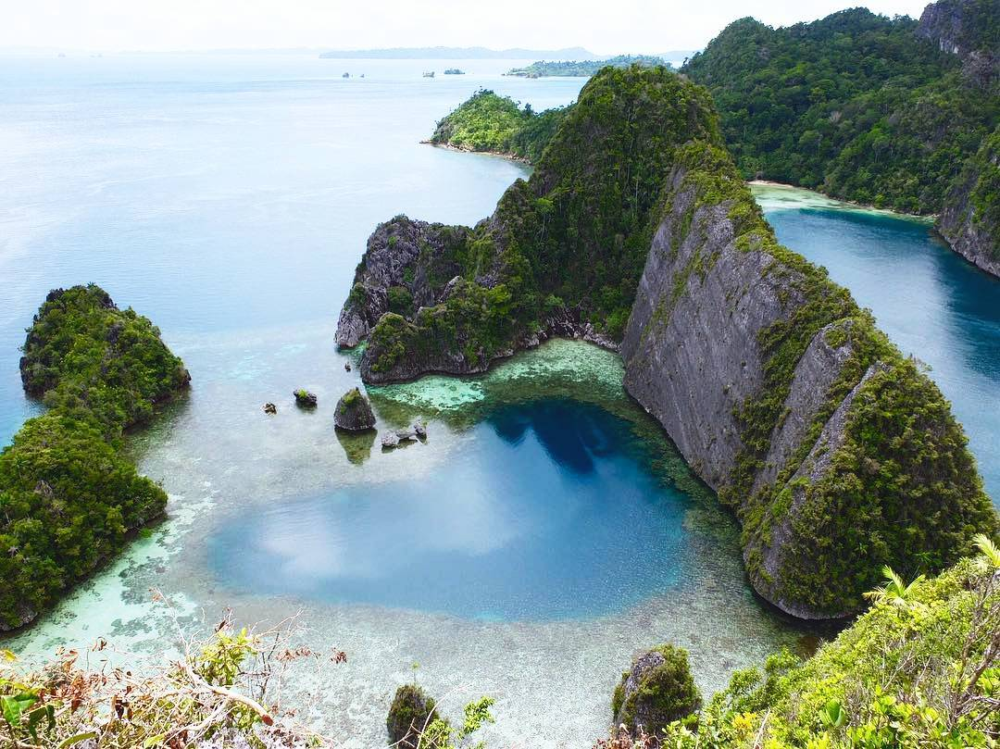
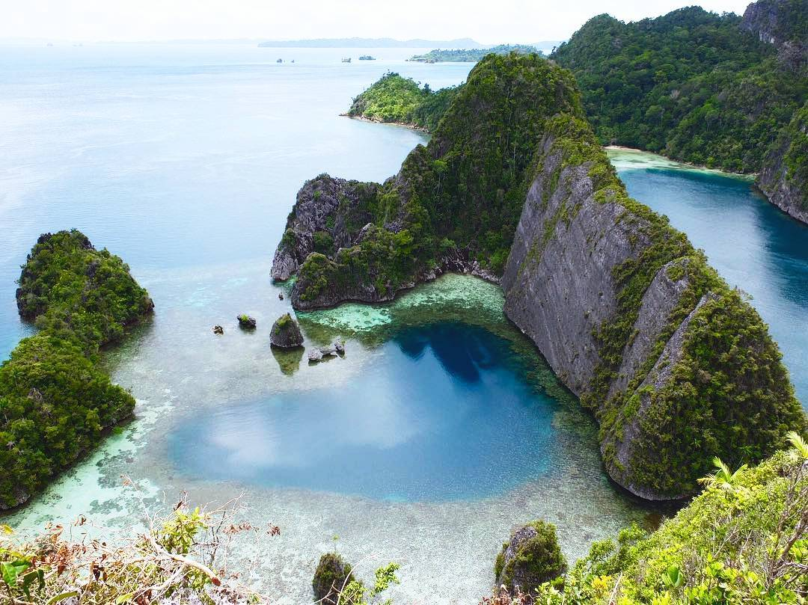

Raja Ampat ini memiliki banyak sekali keindahan alam. Salah satunya adalah Wayag, Wayag ini adalah salah satunya keindahan yang paling indah di Raja Ampat. Untuk mencapai Wayag, diperlukan empat jam perjalanan laut dari pelabuhan Raja Ampat di Waigeo. Biaya sewa perahunya pun tak murah, bisa mencapai jutaan rupiah karena mahalnya bahan bakar di sana. Setelah empat jam mengarungi laut, Anda akan singgah sejenak di Desa Sarpele. Di sana, ada ketua adat yang dihormati oleh warga setempat. Jika ingin berangkat ke Wayag, maka Anda wajib meminta ijin dan membayarkan uang sebesar 1 juta rupiah per rombongan sebagai tanda masuk. Uang tersebut kemudian akan dikelola kembali oleh para pengurus untuk meningkatkan kesejahteraan masyarakat setempat. Dari Desa Sarpele, perjalanan kembali dilanjutkan menuju Pos Wayag. Disana, semua pengunjung wajib menunjukkan pin Raja Ampat seharga 500 ribu rupiah untuk turis lokal dan 1 juta rupiah untuk turis asing. Perjuangan Anda belum selesai sampai di situ. Begitu tiba di Wayag, Anda mesti mendaki ke puncak batu karang yang cukup curam. Kira-kira dibutuhkan waktu sekitar 30 – 45 menit untuk mendaki hingga ke puncak agar bisa puas memandang keindahan alam Wayag. Namun, begitu sampai di puncak, segala lelah dan letih lenyap tergantikan dengan rasa puas dan haru karena menyaksikan birunya air laut serta bukit-bukit kars kehijauan yang menonjol di tengah laut.